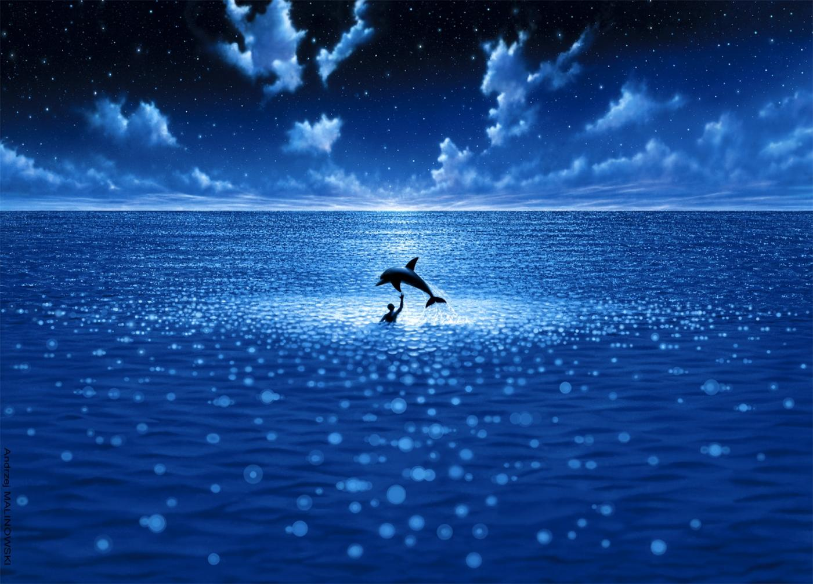
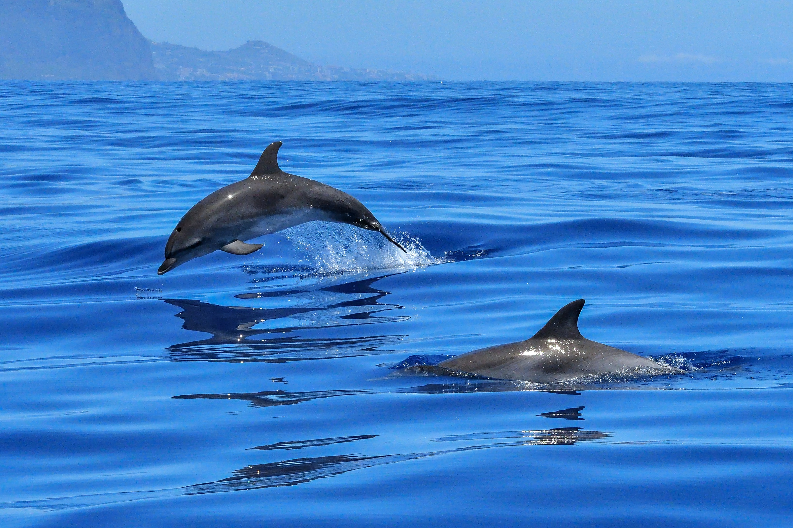

The Big Blue (released in some countries under the French title Le Grand Bleu) is a 1988 film in the French Cinéma du look visual style, made by French director Luc Besson. The film is a heavily fictionalized and dramatized story of the friendship and sporting rivalry between two leading contemporary champion free divers in the 20th century: Jacques Mayol (played by Jean-Marc Barr) and Enzo Maiorca (renamed "Enzo Molinari" and played by Jean Reno), and Mayol's fictionalized relationship with his girlfriend Johana Baker (played by Rosanna Arquette).
 The film, which covers their childhood in 1965 Greece to their deaths in a 1980s Sicilian diving competition, is a cult-classic in the diving fraternity, and became one of France's most commercially successful films (although an adaptation for US release was a commercial failure in that country). President of France Jacques Chirac referred to the film in describing Mayol, after his death in 2001, as having been an enduring symbol for the "Big Blue" generation.
The story was heavily adapted for cinema — in real life, Mayol lived from 1927 to 2001 and Maiorca retired from diving to politics in the 1980s. Both set no-limits category deep diving records below 100 metres, and Mayol was indeed involved in scientific research into human aquatic potential, but neither reached 400 feet (122 metres) as portrayed in the film, and they were not direct competitors. Mayol himself was a screenwriter for the film, and Mayol's search for love, family, "wholeness" and the meaning of life and death, and the conflict and tension between his yearning for the deep and his relationship with his girlfriend also form part of the backdrop for the latter part of the film.